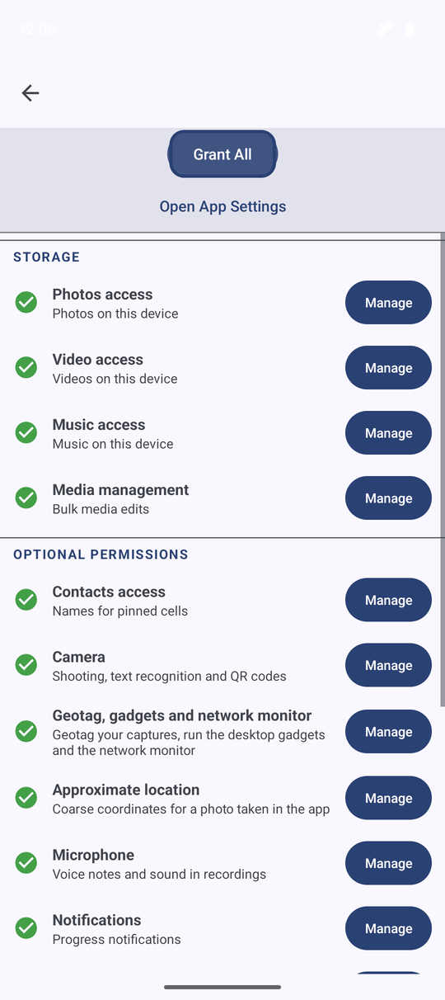
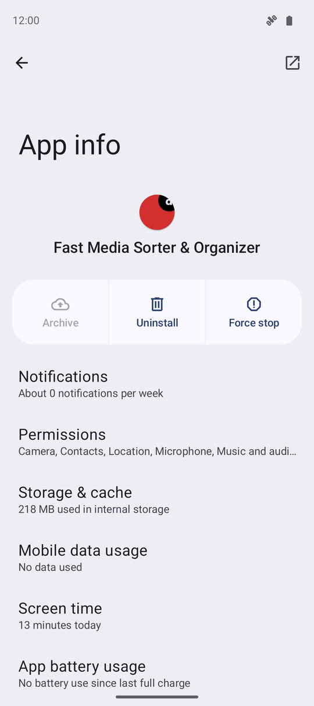

Understanding App Permissions
FastMediaSorter only asks for the permissions a feature actually needs, explains each one in the same plain words everywhere it is asked, and lets you grant them one at a time or all at once from Settings, General, Permissions & Access - with Android's own app settings always one tap away for changing your mind later.
Why You'll Love This
FastMediaSorter only sees and touches what Android lets it. Every permission it can ask for exists because some feature needs it - reading your photos, opening a shared folder over the network, writing a geotag into a picture you just took. Nothing is requested "just in case".
You already met a short version of this list on the welcome screen when you first opened the app. This page is the full picture: every permission this edition can ask for, in plain words, in one place, with a way to grant them one at a time or all together.
- ✓ FastMediaSorter installed, in any edition: Standard, noLegal, Lite, Photos, Legacy, VR or FOSS. The exact list of rows differs a little by edition - a permission only appears if this build can actually use it.
- ✓ A few rows only appear from certain Android versions onward - each one names the version it needs, so there is nothing to look up.
Find the full list
Open Settings, the General tab, and tap Permissions & Access. The screen lists every permission this edition can request, grouped under headings: Storage, Network, Microphone, Notifications, Camera, Location, System, and - on editions that ship the launcher - Contacts. Each row shows a short label, a one-line description, and whether it is currently granted.
The same list, with the same wording, is also the last page of the first-launch setup wizard - see First launch and setup wizard.
Grant one permission at a time
Tap any row that is not yet granted. Most rows show Android's own request dialog right there - tap Allow and you are back on the list. A few permissions cannot be granted this way at all: Android insists on a dedicated screen for them, for example Full storage management or Display over other apps. For those, tapping the row opens that screen; make your choice there and press Back to return to FastMediaSorter.

Grant everything in one go
Tap Grant All at the top of the screen instead of working through the rows one by one. The app answers one ordinary Android dialog for the permissions that support it, then walks you to each special-screen permission in turn, one system screen at a time, so you always know which one you are looking at.
Changed your mind about a specific one afterwards? Deny it the normal way in Android, or come back to this screen and revisit that single row.

What each group actually unlocks
- Storage - reading your photos, video and music, and, on the sideload noLegal edition only, full access to any folder for bulk media edits.
- Network - reaching SMB, SFTP, FTP and DLNA servers on your local network. On newer Android versions this is its own permission, separate from Wi-Fi being on.
- Microphone - recording voice notes and capturing sound inside screen recordings, on editions that record audio.
- Notifications - showing progress while a long job runs in the background, on editions that keep audio playing after you leave the app.
- Camera - taking photos and video inside the app, reading text and scanning QR codes, including the code used to pair a companion device.
- Location - writing coordinates into the photos and videos you shoot in the app. On editions with a launcher desktop or a Network Monitor, the same permission also drives the compass, speed, altitude and map desktop gadgets and the network monitor's GNSS and Wi-Fi details - the row on those editions names all of that, not only the geotag.
- System - background items such as an exemption from battery optimization for scheduled jobs, drawing the gesture strip over other apps, installing an APK you opened from a file (noLegal edition only), and reporting phone signal strength or step count on the launcher desktop.
- Contacts - reading a pinned contact's current name and photo so a launcher shortcut stays up to date, on editions with a launcher desktop.
A row you do not see simply does not apply to this edition or this Android version - the list never hides a permission the app could still use.
Whichever screen asks for a permission - this list, the welcome wizard, or a dialog shown while you work - it explains that permission in the same words. Nothing changes meaning depending on where you happened to be asked.
Change a decision later
Tap Open App Settings to jump straight to Android's own application details screen for FastMediaSorter. That is the only place to grant a permission Android has stopped asking about in-app - typically one you denied twice in a row - and it is also where you go to revoke something you granted earlier.

What You Get
You know what every permission this edition can ask for is actually for, you can grant them one at a time or all in one pass, and you know exactly where to go in Android when you want to revisit a choice later.
Tips and Troubleshooting
- Audio permissions are always offered where they belong. In the editions that record or play sound in the background, the microphone and audio permissions are listed and can be granted - they are never hidden by mistake.
- A row named 'Physical activity' or 'Install apps from files'? Those only appear on the noLegal sideload edition, because only its manifest declares them - the Play Store edition never shows a permission it could not act on.
- Location reads differently depending on your edition. On Standard and noLegal it explains the desktop gadgets and Network Monitor too; on the others it stays a plain geotag explanation, because that is all those editions use it for.
- A denied permission is not a dead end. Most features that need one keep working in a reduced form, and a row you skip during setup stays visible here for whenever you change your mind.